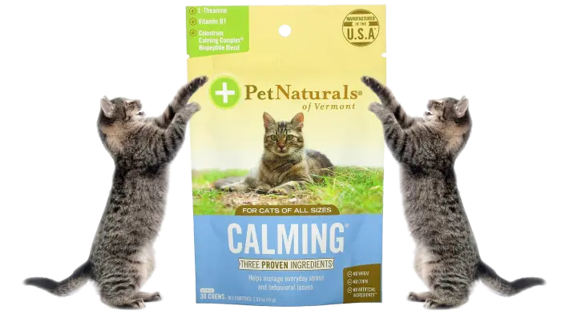

Pet Naturals of Vermont, Calming, For Cats
Your cat deserves the best pet supplement the world has to offer. That's what's in the package.
- 
TIME LEFT
2: 00: 00120uah 60uahOrder date:
From the manufacturer
Keep Calm and Carry On
Are you searching for a better way to ease your pet’s separation anxiety or stress? Calming chews help relieve pet stress without corn, wheat or artificial ingredients.
Peace of Mind
Pet Naturals of Vermont’s research-backed formula makes it safe to double or triple the amount in times of added stress.

More than a Tasty Treat
Don’t let its satisfying chicken liver flavor fool you. Technically, Calming isn’t a treat but it sure tastes like one. Reward your best buddy with a Calming chew.
Best Uses for Calming Chews
Car rides. Vet visits. Thunderstorms. Boarding. Parties. These are just a handful of times when Calming chews may come in handy. Does your dog hate to be left home alone? Does your cat love hiding under the bed? Serve up a Calming chew to help soothe your furry pal’s anxiety and make your life easier, too!
For Best Results:
We recommend administering Calming chews 30 minutes prior to a stressful event. The 30-minute activation period gives you a chance to increase dosage if you’re not seeing expected results. Calming is safe for unique stress inducing events and for long-term use to help manage everyday stress.